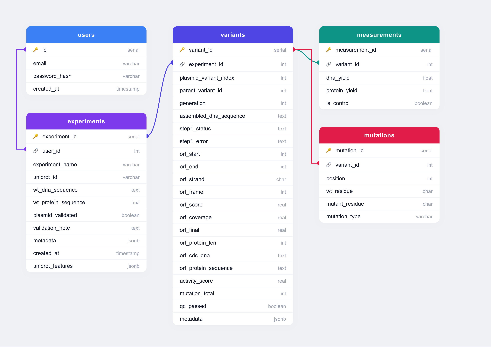

Database Schema¶
The portal uses a PostgreSQL 16 database comprising five tables. The schema is defined in schema.sql and is applied automatically on first container startup.
Entity relationship diagram¶

users¶
Stores registered user accounts.
| Column | Type | Description |
|---|---|---|
id |
SERIAL PK |
Auto-incrementing user ID |
email |
VARCHAR(255) UNIQUE NOT NULL |
Login email address |
password_hash |
VARCHAR(255) NOT NULL |
Werkzeug-hashed password |
created_at |
TIMESTAMP |
Account creation time |
experiments¶
One row per experiment, created at UniProt confirmation. Represents a single directed evolution campaign targeting one protein.
| Column | Type | Description |
|---|---|---|
experiment_id |
SERIAL PK |
Auto-incrementing experiment ID |
user_id |
INTEGER FK → users.id |
Owning user |
experiment_name |
VARCHAR(255) NOT NULL |
Auto-generated: "Experiment – {uniprot_id}" |
uniprot_id |
VARCHAR(20) NOT NULL |
UniProt accession ID (e.g. P00533) |
wt_protein_sequence |
TEXT NOT NULL |
Wild-type protein sequence from UniProt |
wt_dna_sequence |
TEXT NOT NULL DEFAULT '' |
Wild-type plasmid DNA; populated at plasmid upload |
uniprot_features |
JSONB |
Array of {feature_type, start_location, end_location} from UniProt |
plasmid_validated |
BOOLEAN DEFAULT FALSE |
Set to TRUE after successful FASTA validation |
validation_note |
TEXT |
Optional note from validation step |
metadata |
JSONB |
Reserved for future use |
created_at |
TIMESTAMP |
Experiment creation time |
saved_at |
TIMESTAMP |
Set when the user saves the experiment; NULL until saved. Only experiments with non-NULL saved_at appear in the Past Experiments list |
variants¶
One row per plasmid variant within an experiment. Stores the assembled DNA sequence, ORF detection results, and QC metadata. The table is subdivided into four logical groups of columns.
Identity and lineage¶
| Column | Type | Description |
|---|---|---|
variant_id |
SERIAL PK |
Auto-incrementing variant ID |
experiment_id |
INTEGER FK → experiments.experiment_id |
Parent experiment |
plasmid_variant_index |
INTEGER |
Unique index from the uploaded data file |
parent_variant_id |
INTEGER FK → variants.variant_id |
Parent variant (NULL until lineage resolution) |
generation |
INTEGER NOT NULL |
Directed evolution generation number |
Sequence data¶
| Column | Type | Description |
|---|---|---|
assembled_dna_sequence |
TEXT NOT NULL |
Full assembled plasmid DNA sequence |
protein_sequence |
TEXT NOT NULL DEFAULT '' |
Protein sequence if provided in upload file |
ORF detection results¶
All columns in this group are NULL until ORF detection is executed.
| Column | Type | Description |
|---|---|---|
step1_status |
TEXT |
'ok' or 'error' |
step1_error |
TEXT |
Error message if step1_status = 'error' |
orf_start |
INTEGER |
0-based start coordinate of ORF in circular plasmid |
orf_end |
INTEGER |
0-based end coordinate of ORF in circular plasmid |
orf_strand |
CHAR(1) |
'+' (forward) or '-' (reverse complement) |
orf_frame |
INTEGER |
Reading frame: 0, 1, or 2 |
orf_score |
REAL |
Alignment identity vs WT (0–1, WT-normalised) |
orf_coverage |
REAL |
Alignment coverage vs WT (0–1, WT-normalised) |
orf_final |
REAL |
Combined selection score (score × length_similarity) |
orf_protein_len |
INTEGER |
Length of identified ORF protein (amino acids) |
orf_cds_dna |
TEXT |
Coding DNA sequence of the identified ORF |
orf_protein_sequence |
TEXT |
Translated protein sequence of the identified ORF |
QC and metadata¶
| Column | Type | Description |
|---|---|---|
activity_score |
REAL |
Activity score computed by the scoring pipeline |
mutation_total |
INTEGER |
Total mutation count populated by mutation calling |
qc_passed |
BOOLEAN DEFAULT TRUE |
Set to FALSE for records rejected by QC |
qc_reason |
TEXT |
Reason if qc_passed = FALSE |
metadata |
JSONB |
Extra columns from upload file not mapped to known fields |
measurements¶
One measurement row is inserted per variant at upload time.
| Column | Type | Description |
|---|---|---|
measurement_id |
SERIAL PK |
Auto-incrementing ID |
variant_id |
INTEGER FK → variants.variant_id |
Associated variant |
dna_yield |
FLOAT |
DNA yield in femtograms (fg) |
protein_yield |
FLOAT |
Protein yield in picograms (pg) |
is_control |
BOOLEAN DEFAULT FALSE |
Whether this variant is a control |
mutations¶
Populated by mutation calling after ORF detection identifies the coding sequence and aligns the variant protein against the WT reference.
| Column | Type | Description |
|---|---|---|
mutation_id |
SERIAL PK |
Auto-incrementing ID |
variant_id |
INTEGER FK → variants.variant_id |
Associated variant |
position |
INTEGER NOT NULL |
Amino acid position (1-based) |
wt_residue |
CHAR(1) |
Wild-type amino acid |
mutant_residue |
CHAR(1) |
Mutant amino acid |
mutation_type |
VARCHAR(20) |
'missense', 'nonsense', 'insertion', or 'deletion' |